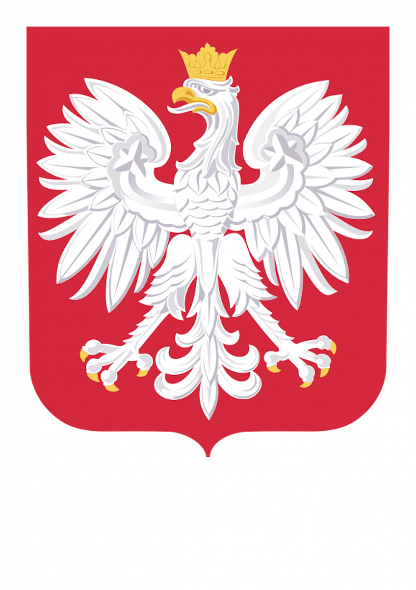

Narodowe Święto Niepodległości – święto państwowe w Polsce obchodzone corocznie 11 listopada dla upamiętnienia odzyskania niepodległości przez Polskę w 1918, po 123 latach zaborów (1795–1918). Święto zostało ustanowione ustawą z dnia 23 kwietnia 1937, zniesione ustawą Krajowej Rady Narodowej 22 lipca 1945, przywrócono je ustawą w okresie transformacji systemowej w 1989. Jest dniem wolnym od pracy. Odzyskiwanie przez Polskę niepodległości było procesem stopniowym. Wybór 11 listopada uzasadnić można zbiegiem wydarzeń w Polsce z zakończeniem I wojny światowej dzięki zawarciu rozejmu w Compiègne 11 listopada 1918, pieczętującego ostateczną klęskę Niemiec. Dzień wcześniej przybył do Warszawy Józef Piłsudski. Jędrzej Moraczewski opisał to słowami:
Niepodobna oddać tego upojenia, tego szału radości, jaki ludność polską w tym momencie ogarnął. Po 120 latach prysły kordony. Nie ma „ich”. Wolność! Niepodległość! Zjednoczenie! Własne państwo! Na zawsze! Chaos? To nic. Będzie dobrze. Wszystko będzie, bo jesteśmy wolni od pijawek, złodziei, rabusiów, od czapki z bączkiem, będziemy sami sobą rządzili. (...) Cztery pokolenia nadaremno na tę chwilę czekały, piąte doczekało. (...)
